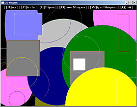
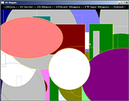
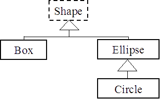
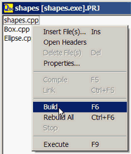
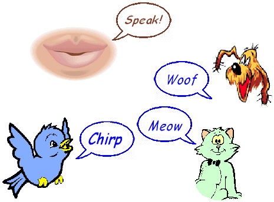

<!DOCTYPE html PUBLIC "-//W3C//DTD XHTML 1.0 Transitional//EN" "http://www.w3.org/TR/xhtml1/DTD/xhtml1-transitional.dtd">
<html xmlns="http://www.w3.org/1999/xhtml">
<head>
<meta http-equiv="Content-Type" content="text/html; charset=iso-8859-1" />
<title>React: A first C++ project</title>
<link href="../CSS/1colNheader.css" rel="stylesheet" type="text/css" />
<style type="text/css">
<!--
.style10 {
	color: #3C505E;
	font-size: xx-small;
	font-style: italic;
	font-family: Verdana, Arial, Helvetica, sans-serif;
}
h5 {
	font-size: small;
	color: rgb(90, 95, 102);
}
.style14 {color: #324E51}
.style20 {font-size: x-small}
.style34 {font-size: 14px}
.CaptionLarge {
	color: #666666;
	font-style: italic;
	font-size: 0.9em;
}
.SmallKeyword {
	font-size: x-small;
	color: 0000FF;
}
.title2 {
	font-size: 1.1em;
	font-family: Verdana, Arial, Helvetica, sans-serif;
	font-style: italic;
	color: #666666;
}
.abstractCode {font-size: 0.85em; color: #8C4000; line-height: 140%; font-family: Verdana, Arial, Helvetica, sans-serif;}
.abstractComment {color: #009966}
.style47 {color: #666666; font-style: italic; font-size: 0.9em; font-weight: bold; }
.magicBright {
	color: #D41FFF
}
</style>
</head>

<body>
<div id="wrapper">
  <div id="header">
    <table width="92%" border="0" align="center" cellpadding="2">
      <tr>
        <td width="473"><h1 align="left">Object-Oriented C++:</h1>
        <p align="left"><span class="title"><span class="title">with WinBGIm</span></span><br />
        </p></td>
        <td width="288"><span class="style14"></span></td>
        <td width="184"><h2> &nbsp;&nbsp;Shapes </h2></td>
      </tr>
    </table>
  </div>
  <div id="main">
    <p class="abstract">Several features of C++ improve on C. The &quot;Shapes&quot; example uses two such features: object-orientation and dynamic collections (The dynamic collections are part of the Standard Templates Library, the STL).</p>
    <p class="abstract">. Some programming tasks are much easier to perform using classes and inheritance, the essential tools of object orientation. This is because the program situation (the problem domain) is naturally object-oriented. The program &quot;Shapes&quot; is an example of this. <br />
    . Dynamic collections (also called &quot;containers&quot;) are storage spaces, just like arrays are storage spaces. Unlike arrays, dynamic collections can grow indefinitely as the program runs (as long as there is still some memory available). That's why they are called &quot;dynamic&quot;. &quot;Shapes&quot;, uses a &quot;vector&quot;, one type of dynamic collection, to store an indefinite number of shapes.</p>
    <p class="abstract">The program allows the creation of artistic screens composed of many coloured shapes drawn on top of each other.<br />
    - A variety of basic shapes are created and displayed one by one by pressing   different keys. Once created each shape is stored into a sequential collection (a vector).<br />
- All shapes in the collection can be drawn sequentially (on top of each other) at any time to give a colourful composition.<br />
- At any time more shapes may be added, or the vector can be emptied and all shapes wiped off the screen.<span class="style34"><br />
      </span><br />
    As we build &quot;Shapes&quot; and see how the program works, we also learn how  to build object-oriented C++ projects composed of several classes. We discover the advantages of class inheritance. We learn how to use vectors and the STL, We also see how to use WinBGIm, a library of simple graphics functions. </p>
    <p class="abstract">Shapes is a deceptively simple C++ program. It would be MUCH!! harder to implement in C without object-orientation. However to be able to design and write such &quot;simple magic&quot; ourselves, we have to understand key concepts of object orientation  expressed in the weird and wonderful terms below.</p>
    <hr />
    <p><span class="Lowlight">Key Concepts: </span><span class="SmallKeyword">inheritance</span> | <span class="SmallKeyword">base class</span> | <span class="SmallKeyword">derived class</span> | <span class="SmallKeyword">virtual method</span>  <span class="SmallKeyword"> </span> | <span class="SmallKeyword">abstract class </span>| <span class="SmallKeyword">abtract method</span> | <span class="SmallKeyword">virtual destructor</span> | <span class="SmallKeyword">polymorphism</span> |  <span class="SmallKeyword">vector</span> | <span class="SmallKeyword">STL</span></p>
    <hr />
    <h2>      Before we start</h2>
    <p>Create a  &quot;<em>shapes</em>&quot; subdirectory somewhere you choose to build this example.  </p>
    <p>Get the example from the zip file:<a href="shapes.zip">  shapes.zip</a>    </p>
    <p>Save the archive into the new &quot;<em>shapes</em>&quot; subdirectory, and extract the source files from the archive.<br />
    ___________ </p>
    <h2>Opening the &quot;Shapes&quot; project </h2>
    <p>With Quincy, load the project file,  <code>shapes [shapes.exe].PRJ</code> from the &quot;shapes&quot; directory:<br />
    It shows 3 .cpp files <code>shapes.cpp</code>, <code>Box.cpp</code> and <code>Ellipse.cpp</code>, but there is more to this project than meets the eye:</p>
    <p> If you right-click with the cursor anywhere on the project window and select Open Headers, you will see 4 header files in the project directory: <code>Shape.h</code>, <code>Box.h</code>, <code>Ellipse.h</code> and <code>Circle.h</code>. Each of these contains the class declaration for a class of the same name. The shapes project uses these 4 C++ classes.</p>
    <p>- The header (<code>.h</code>) files are the public face of classes. They contain the class declaration. A class declaration states what data each object of that class contains, what functions <em class="Lowlight">(called methods for classes)</em> can be called for each object. It gives the functions prototypes <span class="Lowlight"><em>(the methods signatures)</em></span>. </p>
    <p>- The <code>.cpp</code> files on the other hand <em>define </em>the class methods. They store the code for the functions, at least the most complex functions, as basic functions are allowed to be defined <em>inline</em> in the class header.</p>
    <hr />
    <table width="100%" border="0" cellpadding="2">
      <tr>
        <td><p class="caption">The Shapes project is composed of 4 classes:<br />
          &quot;Shape&quot; is the <strong>base class</strong>. Every object displayed on the program screen is a Shape. &quot;Box&quot; (a rectangle in fact), &quot;Ellipse&quot;, and &quot;Circle&quot; (a special kind of circle) are all <strong>derived classes</strong>. They <strong>derive</strong> from Shape. We also say that they <strong>inherit</strong> from Shape.</p>
          <p class="caption">We say that a <strong>derived class</strong> (also called a sub-class) inherits from a <strong>base class</strong> (also called a superclass).</p>
          <p class="caption">The project uses derivation (public inheritance in C++ terms) between these classes to make use of the fact that boxes, ellipses and circles <strong>are</strong> shapes. The diagram on the right uses a triangle to indicate the inheritance relationship. (This conforms with the UML notation for class relationships.)</p>
        <p class="caption">As we can see, Box <strong>is a </strong> Shape, Ellipse <strong>is a </strong> Shape, Circle <strong>is an</strong> Ellipse (and therefore also <strong>is a</strong> Shape).</p>
        <p class="caption">The Shape class is drawn with dashes to indicate it is an abstract class (see further down).</p></td>
        <td><p align="center"><br />
            <span class="CaptionLarge">Shapes Project - Class Diagram </span></p>
        </td>
      </tr>
    </table>
    <p align="center" class="CaptionLarge">Inheritance represents the <strong>is_a</strong> relationship between classes</p>
    <hr />
    <p class="abstract"><span class="title2">N</span>otice that there are no <code>.cpp</code> files for classes Shape and Circle. This is because the code for these classes is so basic that it is completely defined <strong>inline</strong> within the <code>Shape.h</code> and <code>Circle.h</code> headers.<br /> 
      This is indicated by the use of the <span class="keyword">inline</span> keyword at the start of the function declaration in the header.<br />
    ___________ </p>
    <h2>Building and running the &quot;shapes.exe&quot; executable </h2>
    <p>You can open any of the implementation files <span class="CaptionLarge">(.cpp)</span> that are part of the project by double-clicking on their name in the project window. The header files can be opened from the <em>Project-&gt;Open Header </em>menu entry that is obtained by right-clicking with the cursor anywhere on the project window.</p>
    <p>Before we do this however, let us compile and link react, and play a little with the program to get familiar with it:<br />
      Right-click on the project window, select <span class="style47">Build</span> (or press <em>F6</em>). </p>
    <p>Quincy compiles the three &quot;.cpp&quot; files with the headers that they <code>#include</code>, then links them together to produce &quot;shapes.exe&quot;. The commands it uses to compile and then link are displayed into a &quot;Build&quot; window. </p>
    <p>You can now run the program(<em>after closing the &quot;Build&quot; window)</em> by clicking on the filename &quot;shapes.exe&quot; in Windows Explorer, or within Quincy by clicking on <em>Project-&gt;Execute </em>(or pressing <em>F9</em>).</p>
    <p>The program gives some basic instructions on top of the screen:<br />
    The user can select 3 kinds of shapes by pressing the associated key, 
a <span class="string">B</span>ox <span class="caption">(a rectangle with vertical and horizontal sides)</span>, an <span class="string">E</span>llipse, or a <span class="string">C</span>ircle.The shape dimensions and colors are determined by the random number generator. The selected shape is shown on the screen. A &quot;<em><strong>burst</strong></em>&quot; of shapes can be obtained by leaving the finger on the key for a short time.</p>
    <p>The selected shapes are added (as Shape pointers) to a vector container. All the shapes in the collection can be shown at once by pressing the | [<span class="string">D</span>]raw Shapes | option key (<span class="string"><em>D</em></span>).<br />
    ___________</p>
    <h2>How does it work?  </h2>
    <p>We will first examine the driver &quot;<code>shapes.cpp</code>&quot; (the code that makes all the classes work together).</p>
    <p>&quot;shapes&quot; uses the standard C random number generator function <code>rand()</code> to obtain values for the geometric dimensions of each shape requested by the user.</p>
    <p>When <span class="string">B</span>, <span class="string">E</span>, or <span class="string">C</span> are pressed:<br />
    - An instance of the requested shape class (a <span class="string">box</span>, or <span class="string">ellipse</span>, or <span class="string">circle</span> object) is created using <span class="keyword">new</span> and passing the geometric data to the class constructor.<br />
      - The sceen is then cleared and the new shape is drawn with<br />
      <code>&nbsp;&nbsp;&nbsp;clearviewport(); <span class="comment">// Clears the screen, except the menu bar</span><br />
&nbsp;&nbsp;&nbsp;theShape-&gt;draw(); <span class="comment">// Show only the new shape<br />
</span></code>- 
      A <em>pointer</em> to the created object (<code>theShape</code>) is placed inside the collection of shapes (a vector called <code>shapes</code>) with<br /> 
    <code>&nbsp;&nbsp;&nbsp;shapes.push_back(theShape);<br />
    </code></p>
    <p><code><span class="abstract">The beauty of vectors is that they grow as needed. They can never fail when adding data, unlike arrays that can crash your program if it tries to store more into an array than the array can contain.<br />
    In this project there is no way of knowing in advance how many shapes the user will request, therefore a vector is all indicated. The vector of shapes is created as a local variable in the main() function with:<br />
    </span></code> <code>&nbsp;&nbsp;&nbsp;vector&lt;Shape *&gt; shapes;  <span class="comment">// Collection of stored shapes</span></code><span class="abstractCode"><span class="abstractComment"><br />
    </span></span><span class="abstract">The parameter between the angle brackets &lt; and &gt; is called a &quot;type parameter&quot;. It indicates what variable type (Shape pointers in this case) the shapes vector will store.</span><br />
    </p>
    <p>When <span class="string">D</span> is pressed:<br />
- The screen is cleared, then the shapes in the vector are drawn sequentially, one by one on top of each other in a for loop:<br />
    <code>&nbsp;&nbsp;&nbsp;<span class="keyword">for</span>(<span class="keyword">int</span> i = 0; i &lt; numShapes; i++)<br />
&nbsp;&nbsp;&nbsp;&nbsp;&nbsp;&nbsp;shapes[i]-&gt;draw();</code></p>
    <p>When <span class="string">W</span> is pressed:<br />
- The screen is <span class="string">w</span>iped clean, then the memory previously allocated to all the shapes in the vector is released, each shape in its turn with:<br />
<code>&nbsp;&nbsp;&nbsp;<span class="keyword">for</span>(<span class="keyword">int</span> i = 0; i &lt; numShapes; i++)<br />
&nbsp;&nbsp;&nbsp;&nbsp;&nbsp;&nbsp;<span class="keyword">delete</span> shapes[i];</code><br />
    <span class="keyword">delete</span> is passed the Shape instance pointer previously created with <span class="keyword">new</span>.</p>
    <p><span class="abstract"><span class="abstractCode">N</span>otice that we obtain how many shapes have been stored in the vector <code>shapes</code> with the statement:<br />
</span><span class="abstractCode">&nbsp;&nbsp;    <code>int numShapes = shapes.size(); </code></span><span class="abstract"><br />
The vector at any time knows how many elements it contains... Easy<strong>!</strong></span><br />
    ___________</p>
    <h2>Into the Guts of Classes</h2>
    <p>The simplicity of this program is deceptive. It relies on the expressive power of <em>inheritance</em> and <em>polymorphism</em> available to C++ and to all object-oriented languages. Without object-orientation this code would be much more messy. Let's examine how <em>shapes</em> uses these features:</p>
    <p><span class="title"><u>Inheritance</u><br />
    </span>Boxes and ellipses <strong><em>are </em></strong>shapes. The Box and Ellipse classes therefore inherit from the Shape class. This is shown by the public inheritance in the class declarations:<br />
    <span class="keyword"><code>class</code></span><code> Ellipse: <span class="keyword">public</span> Shape<br />
{<br />
    . . .<br />
     <span class="keyword">class</span> Box : <span class="keyword">public</span> Shape<br />
{</code></p>
    <p class="abstract"><u>Private</u> and <u>protected</u> inheritance types also exist in C++. They are used extremely rarely and do not represent the <strong>is_a</strong> relationship between classes. We will ignore them in this document.</p>
    <p>A circle <em><strong>is a </strong></em>kind of ellipse <span class="Lowlight"><em>(where the two axes are of equal dimensions)</em></span>. Therefore the Circle class inherits from the Ellipse class with:<br />  
      <span class="keyword"><code>class</code></span><code> Circle : <span class="keyword">public</span> Ellipse<br />
{</code></p>
    <p>What inheritance means in practice is that all the code and data that exist in the base class also exist in the derived class. It has been &quot;inherited&quot; by the derived class.<br />
    There is no need for example to repeat the Ellipse <code>draw()</code> method within the Circle code as the ellipse function of the same name, inherited by Circle will do the job just as well.</p>
    <p>If a function of a base class needs to be replaced by another with the same name and signature in the derived class, because the behaviour of the inherited function does not fit the expected behaviour of the derived class, this can be done simply by re-declaring the function in the derived class header and writing the new function code in the derived class <em>.cpp</em> file. We say in this case that the derived class function <strong>overrides</strong> the base class function.</p>
    <p class="abstract">For this to work however we must declare the method in the base class header to be <code class="keyword">virtual</code>. Briefly, this in an instruction to the compiler to place the function address into a table kept by the program called the &quot;virtual table&quot; or V-table. The virtual table allows the program at runtime to find the proper function, even though there may exist several functions with the same name and signatures in the class hierarchy.</p>
    <p><span class="abstract">Note that the default destructor is a special class function that <u>must</u> be declared virtual in the base class. This allows the proper destructor to be called when a derived class object falls out of scope or is deleted. This is done in Shape with:<br />
      </span><span class="comment"><code>/**<br />
&nbsp;* Default destructor must be virtual to support inheritance<br />
&nbsp;*/</code></span><code><br />
      <span class="keyword">virtual</span> ~Shape() {}</code></p>
    <p>Shape is a special kind of class called an <strong>abstract class</strong>. <br />
    No object of the abstract class Shape can be created as such. Shape instances can be created, but they will be created as Circle, Ellipse, or Box instances. This is because Shape has one method, <span class="CaptionLarge">draw()</span>, that is declared in the header, but never defined. <span class="CaptionLarge">draw()</span> is itself called an <strong>abstract method</strong>:<br />
    <span class="comment"><code>/**<br />
&nbsp;* Draw is abstract. It must be implemented by derived classes.<br />
&nbsp;*/<br />
    </code></span><code><span class="keyword">virtual void</span> draw() <span class="keyword">const</span> = 0;</code></p>
    <p>This is achieved by declaring draw() to be <code>virtual</code> and <code>= 0</code>.</p>
    <p><span class="title2">Why bother with inheritance?</span><br />
    Inheritance saves coding. We can derive a new class from an existing base class. By doing so we inherit all previously working code from the base class. This saves work, is more efficient as the executable will be smaller, and is safer since we re-use  existing <span class="CaptionLarge">(and hopefully tested and solid)</span> code. </p>
    <p>For example we could add a <code>Square</code> class and make it inherit from <code>Rectangle</code>... no need to re-write <code>draw()</code> then, as the mehod inherited from Rectangle will work just fine for Square:<br />
      <span class="keyword"><code>class</code></span><code> Square : <span class="keyword">public</span> Rectangle<br />
{</code></p>
    <p>But these advantages pale in comparison with the <span class="magicBright">magic of polymorphism</span> that inheritance enables.</p>
    <p class="title"><u>Polymorphism</u></p>
    <table border="1">
      <tr>
        <td><p>The same function may have a variety of behaviours depending on the category of the object (the class) that executes it. </p>
        <p>The &quot;speak&quot; function of Bird will probably chirp, but that of Dog is more likely to bark, etc...</p>
        <p>In object-oriented jargon this is referred to as polymorphism.</p>
        <p>The image on the right illustrates the polymorphism (the various forms) of <em>speak</em>.</p></td>
        <td width="465"></td>
      </tr>
    </table>
    <p>For the object-oriented programmer, polymorphism is just short of magic:</p>
    <ul>
      <li>        Create a class hierarchy where all derived classes override polymorphic methods <span class="CaptionLarge">(which must be virtual in c++)</span> inherited from the base class, and with the exact same signature <span class="CaptionLarge">(for example draw() in &quot;shapes&quot;)</span>.</li>
      <li>Store object instances of the various derived classes as a collection <span class="CaptionLarge">(array, or STL container)</span> of base class pointers <span class="CaptionLarge">(a vector of Shape pointers in the shapes project)</span>.</li>
      <li>When the program calls the polymorphic method of objects in the collection, the correct function will be selected and each object will exhibit its proper behaviour <span class="CaptionLarge">(Circle instances will draw as circles and Rectangle instances as rectangles)</span>.</li>
    </ul>
    <p>In shapes, the polymorphic behaviour of each object stored in the vector is invoked with the for loop:<br />
      <code> &nbsp;&nbsp;&nbsp;<span class="keyword">for</span>(<span class="keyword">int</span> i = 0; i &lt; numShapes; i++)<br />
  &nbsp;&nbsp;&nbsp;&nbsp;&nbsp;&nbsp;&nbsp;shapes[i]-&gt;draw();</code></p>
    <p>The <code>-&gt;</code> is required because each element in the vector is a <u>pointer</u> to a shape instance.</p>
    <hr />
    <p class="title2">WinBGIm</p>
    <p>The simple 2D graphics library WinBGIm is used here to actually draw the shapes on the screen. The code is very simple.<br />
    As an example, the polymorphic (virtual) method draw() is overriden in Ellipse with:</p>
    <table border="1">
      <tr>
        <td width="819"><span class="keyword"><code>void</code></span><code> Ellipse::draw() const<br />
{<br />
&nbsp;&nbsp;&nbsp;<span class="comment">// if filled, draw with fillellipse</span><br />
&nbsp;&nbsp;&nbsp;<span class="keyword">if</span>(filled)<br />
&nbsp;&nbsp;&nbsp;{<br />
&nbsp;&nbsp;&nbsp;&nbsp;&nbsp;&nbsp;setfillstyle(SOLID_FILL, color);<br />
&nbsp;&nbsp;&nbsp;&nbsp;&nbsp;&nbsp;fillellipse(centerX, centerY, width, height);<br />
&nbsp;&nbsp;&nbsp;}<br />
&nbsp;&nbsp;&nbsp;<span class="keyword">else</span> <span class="comment">// if not, draw with ellipse function</span><br />
&nbsp;&nbsp;&nbsp;{<br />
&nbsp;&nbsp;&nbsp;&nbsp;&nbsp;&nbsp;setcolor(color);<br />
&nbsp;&nbsp;&nbsp;&nbsp;&nbsp;&nbsp;ellipse(centerX, centerY, 0, 360, width, height);<br />
&nbsp;&nbsp;&nbsp;}<br />
}</code></td>
      </tr>
    </table>
    <p>Functions <code>setfillstyle()</code>, <code>setcolor()</code>, <code>ellipse()</code> and <code>fillellipse()</code> are part of the <strong>WinBGIm</strong> function library. Their parameters are set from the various attributes of the object that must be drawn. <br />
    Basic help about these and other functions  in the WinBGIm library is given by the Quincy menu: <a href="../../programmerHelp/winbgim/bgi/doc/index.html">Help->Programmer's Help</a>.  </p>
    <hr />
    <p class="abstract">- <strong class="Highlight">WinGBIm</strong> is a basic graphics drawing package that emulates one of the most successful graphics libraries of all times, the Borland Graphics Interface (BGI). WinbGIm adds some extra facilities, like the possibility of catching mouse clicks and mouse position. <br />
      The success of BGI was due to its simplicity.
      The code of graphical programs produced with WinBGIm is very simple, compared to that of other graphics packages. <br />
    ___________<br />
    - You'll understand really well how this code works if you implement your own modifications and extensions to this example. </p>
  </div>
  <div id="footer">
    <div align="center" class="style10"><span class="style20">Maintained by</span>  <span class="style20">- Modified: February 2008</span> </div>
  </div>
</div>
</body>
</html>
